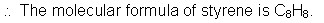

Unit 3: Quantities in Chemical Reactions
Activity 3: Percentage Composition, Empirical, and Molecular Formulas
Content
Empirical Formula and Molecular Formula
|
|
Watch the video clip, Reaction of Bromine with Aluminum ... but please be aware, that, depending on your Internet connection speed, all clips on this page may take a few minutes to download. You can always continue reading the remainder of this page while you wait. |
|---|
The chemical word equation for the reaction between aluminum and bromine liquid is as follows:
aluminum + bromine liquid  aluminum bromide
aluminum bromide
Its balanced chemical equation is:
2Al(s) + 3Br2(l)  Al2Br6(s)
Al2Br6(s)
At first glance, the formula for aluminum bromide in the equation, Al2Br6 appears to be a strange one. Aluminum’s valence is 3 and bromine’s valence is 1 and using the cross-over rule, the formula would end up as being AlBr3. However, through chemical analysis, the molecular formula is Al2Br6. The molecular formula is the exact formula of the compound. The empirical formula is the simplest whole number ratio of the elements’ atoms in a compound. The empirical formula of aluminum bromide is AlBr3. In many cases, the empirical formula is the molecular formula of a compound. Water, H2O, is such a case.
As the name suggests, the term empirical denotes a result based on observation and it does not necessarily lead to the exact formula for the compound. Another point to keep in mind is the nature of a formula. The elements’ respective subscripts in the formula show a mole ratio relationship. The formula for water, H2O, shows us that on a macroscopic level, there are 2 moles of hydrogen and 1 mole of oxygen atoms. And so, to calculate an empirical or a molecular formula for a compound, the given masses for each element must be converted into their respective whole number mole values.
Consider the following example showing a typical empirical formula calculation:
 Example
Example
What is the empirical formula of a compound which is found by analysis to contain 2.2% hydrogen, 26.7% carbon and 71.1% oxygen?
 Sample Solution
Sample Solution
Assume a 100 g sample.
 Question
Question
- A sample of a compound contains 14.4 g of calcium, 4.32 g of carbon and 17.3 g of oxygen. What is the empirical formula for this compound?
 Answer
AnswerIn some cases, the part of the calculation where the first division of the mole ratio values yield a number which cannot be rounded off to a whole number, then you multiply all the mole values by a whole number, i.e., 2, 3 or 4 to obtain a whole number that will allow you to round off the numbers to end up with an empirical formula. Examine the following example:
Example
A hydrocarbon, upon analysis, shows the following mole to mole ratio relationship between carbon and hydrogen-
Question
- Analysis of a certain compound containing only phosphorus and sulphur shows that the percentage composition of the compound (by mass) is 27.9% phosphorus and 72.1% sulphur. Find the empirical formula of this compound.
The molecular formula of a compound gives you the actual composition of a molecule. Its calculation is not much different from that of the empirical formula. Here is an example:
Example
Styrene, the raw material for polystyrene foam plastics, consists of 92.2% carbon and 7.8% hydrogen. Its molecular molar mass is 104.16 g/mol. Determine its molecular formula.
Sample Solution
Note: Up to this point, the steps in this solution are the same as those for the empirical formula type of question. The rest of the steps are the extra ones to find the molecular formula.
Solution (continued)
The empirical molar mass for CH = 12.01 g/mol + 1.01 g/mol
= 13.02 g/mol
Next, the ratios of the molecular molar mass and empirical molar mass are compared.
Molecular molar mass = 104.16 = 8
Empirical molar mass 13.02 1
Since the molecular molar mass is times the empirical molar mass, then the subscripts of the empirical formula are multiplied by a factor of 8.

Question
- A clear, colourless liquid was analyzed and it was found to contain 94.06% oxygen and 5.94% hydrogen. Its molecular molar mass was 34.02 g/mol. Find the molecular formula of this compound.
 Resources
Resources
This is a disclaimer. External Resources will open in a new window. Not responsible for external content.
Unless otherwise indicated, all images in this Activity are from the public domain or are © clipart.com or Microsoft clipart and are used with permission.